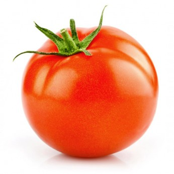
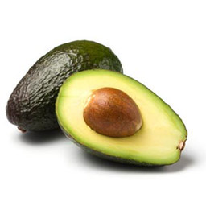
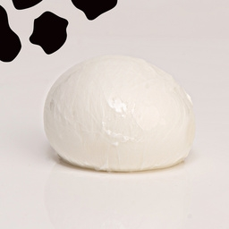

Recettes de sauce pesto
Ingrédients :
- 2 tranches de pain de mie
- 1 avocat
- Mozzarella
- 1 tomate
- Huile d'olive
- Beurre
- Sel
- Poivre
- Découpez votre avocat et votre tomate en morceaux. Coupez votre boule de mozzarella en tranches.
- Chauffez votre poêle à feu moyen.
- Beurrez légèrement un côté de vos deux tranches de pain.
- Placez dans un premier temps une tranche dans la poêle.
- Par-dessus, ajoutez l’avocat, la mozzarella et les morceaux de tomate. Versez un peu d’huile d’olive et assaisonnez enfin de sel et de poivre. Refermez le tout avec l'autre tranche
- Dès que le premier côté est doré (au bout de 2-3 minutes environ), retournez et laissez cuire 3 minutes de plus.